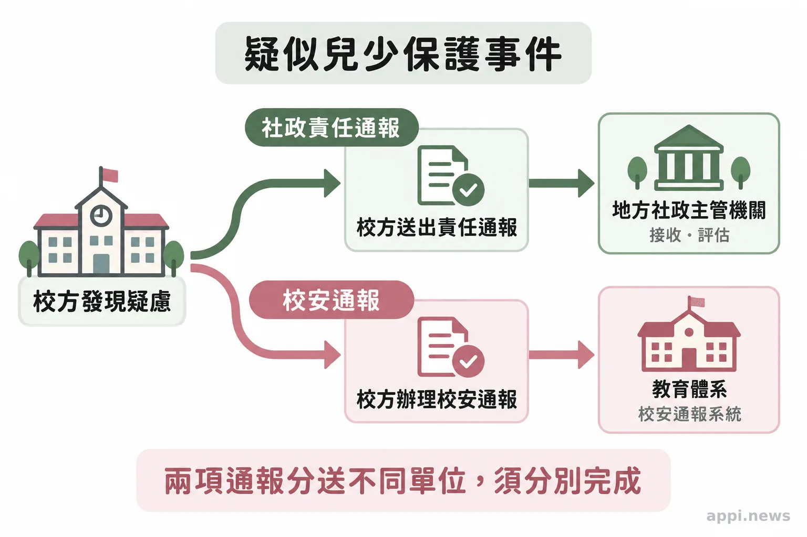
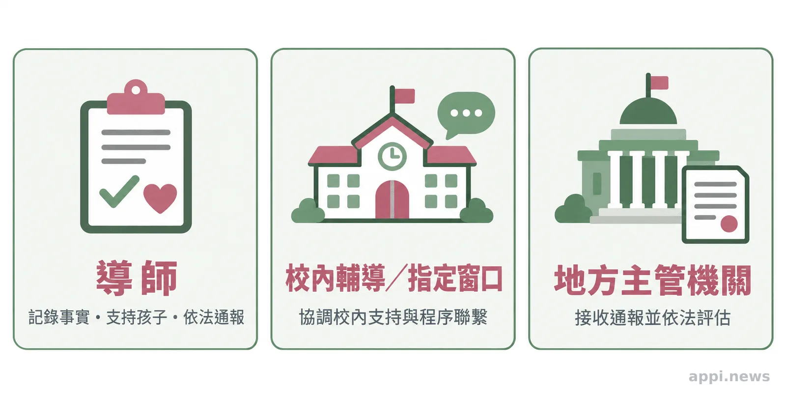

老師遇到兒少保護疑慮，先做這 3 件事
老師發現孩子疑似受傷或聽見求助時，先記錄可觀察事實、依兒少權法第53條通報，再由主管機關評估。整理24小時責任通報、校安通報與校內分工。
老師在教室看見孩子身上有不明傷痕，或孩子提到在家受傷，心裡往往同時冒出幾個問題：是不是自己想多了？要不要先問家長？通報會不會傷害親師關係？兒少保護責任通報的起點，是教育人員執行職務時知悉疑似法定情形；老師可以先記錄看見與聽見的事，再把疑慮交給主管機關評估，不必自行查明責任。
一、先記錄孩子說的話與自己看見的事
記下時間、地點、可觀察情況和孩子原話，接著啟動校內通報流程；不要把推測寫成已確認的事實。
記錄可以很簡單，例如：「週二午休後，孩子說『昨晚有人推我』，當時情緒緊張。」如果看見外傷，就客觀描述位置、外觀與發現時間，不替傷痕下成因判斷。孩子願意說時，安靜聽完並表達會找適當的大人協助；避免連續追問、要求重複陳述，或承諾絕對保密。
老師的工作是支持孩子、保存必要資訊並通報。不要自行調查、安排孩子與疑似傷害者對質，也別在群組傳送孩子的影像或細節。需要醫療協助或現場安全處置時，先處理急迫狀況，並同步聯絡校內權責窗口與適當的緊急資源。
二、責任通報與校安通報分別啟動不同流程
責任通報把疑似兒少保護情形送交地方主管機關受理和評估；校安通報讓教育體系掌握校園安全事件。依規定，兩種通報各有對象與程序。
《兒童及少年福利與權益保障法》第53條列出教育人員等法定通報人。教育人員執行業務時知悉兒少遭受法定情形，應立即向直轄市、縣（市）主管機關通報，最遲不得超過24小時。條文也要求通報人身分資料保密。通報用來提出疑慮並啟動評估，事件經過與責任由主管機關依程序處理。兒少權法第53條
教育部《校園安全及災害事件通報作業要點》把兒童及少年保護事件列為校安通報事件。校內人員可以告知學校受理單位，也可在法定時間內逕向主管教育行政機關通報；學校受理後須依規定啟動處理，並完成依法規通報及校安通報網作業。依法規通報事件的校安時限，原則上依相關法規；若屬緊急事件，學校須立即應變並即時通報，最遲不得逾二小時。教育部校安通報作業要點
因此，送出校安通報不代表社政責任通報已完成。確認地方社政通報送達，以及校安程序依規辦理，是兩項不同的工作。各縣市與學校的窗口、表單和聯繫方式可能不同，平時可依所在地最新規定確認流程。教育部國教署的教育人員兒童及少年保護工作手冊也提供校園辨識與處理參考。

三、校內支持和社政評估各有角色
第一線教育人員提供觀察與通報，輔導室或指定窗口協助校內支持及程序聯繫，地方主管機關則受理通報、分級分類並進行後續評估。
導師熟悉孩子日常，可記下近期可觀察到的變化，並讓校內指定人員知道通報進度。輔導室可協助孩子在校的情緒支持、學習安排和必要的校內聯繫。這些協助不取代法定通報，也不表示校內人員要判斷家庭責任。
地方主管機關接獲通報後，依法進行分級分類；兒少權法第53條也規定，主管機關受理第一項案件後應提出調查報告。教育人員應把資訊交給依法處理的單位，避免自行追查或預測處遇結果。校安要點要求相關人員對事件資料負保密責任；通報人因通報致人身安全受威脅時，所屬學校應協助處理。孩子與家庭的資料只提供給處理所需的人員，讓支持能延續，也減少不必要的曝光。
「第一項及第二項通報人之身分資料，應予保密。」—《兒童及少年福利與權益保障法》第53條

四、擔心誤報或報復，仍可如實提出疑慮
法律要求教育人員在執行業務時知悉法定情形後通報；通報人不必自行完成調查。把已知事實、資訊來源和未知之處說清楚，後續由主管機關評估。
怕誤報時，先把「親眼看見」與「孩子轉述」分開記錄，不用猜測填補空白。擔心家長報復或親師關係受影響，可在通報時說明安全顧慮，並請校內主管或指定窗口協助。校安要點明定通報資料應保密，也要求學校在通報人安全受威脅時提供協助。
若孩子眼前有立即危險，先聯絡警察110報案或衛福部113保護專線，並依校內緊急程序處理；不要等待校內行政流程全部走完才求助。平時確認責任通報窗口、校安承辦人和所在地社政管道，遇到狀況時才找得到人。
今天可以做一件小事：把校內責任通報窗口、校安承辦人及所在地社政通報方式確認好，連同非上班時間的替代聯絡方式放在教職員容易找到的地方。
- 記錄可觀察事實與孩子原話，不自行調查或約談疑似傷害者。
- 兒少權法第53條規定教育人員立即通報，最遲不得超過24小時；校安通報依教育部作業要點辦理。
- 校內輔導支持、社政評估與校安通報各有任務，個人資料應限於處理所需範圍。
常見問題
遇到證據不足、窗口分工或家長詢問時，依共同原則處理：記錄所知、及時通報、保護隱私，並由主管機關評估。
常見問題
Q1：沒有證據可以通報嗎？
可以依疑似法定情形提出通報。記錄觀察到的事實與孩子原話，不必先查明事件責任。
Q2：導師本人可以先送出通報嗎？
校內可由指定窗口協助，但應確認法定責任通報確實送達地方主管機關；校安通報也須依規定完成。
Q3：校安通報可以取代社政通報嗎？
不可以。兩者受理對象和功能不同，符合相關規定時應分別辦理。
Q4：家長會知道誰通報嗎？
兒少權法規定通報人身分資料應予保密；實際資料處理依相關法規及主管機關程序辦理。
Q5：老師可以先找家長了解狀況嗎？
不要自行約談疑似傷害者或安排對質。先記錄並通報，後續聯繫方式交由校內權責人員及主管機關依安全評估處理。
台灣微光希望關懷協會理事長 林秀霞
參考資料
- 全國法規資料庫。《兒童及少年福利與權益保障法》第53條。https://law.moj.gov.tw/LawClass/LawSingle.aspx?pcode=D0050001&flno=53
- 教育部。《校園安全及災害事件通報作業要點》。https://edu.law.moe.gov.tw/LawContent.aspx?id=FL028684
- 教育部國民及學前教育署。《教育人員兒童及少年保護工作手冊》。https://www.k12ea.gov.tw/Tw/Common/DownloadDetail?filter=043F1AEB-690C-4F45-924E-D1C90AE7694E&id=e9088d36-b015-4a87-ad92-db70bdbdf138
本文同步刊於 appi.news。